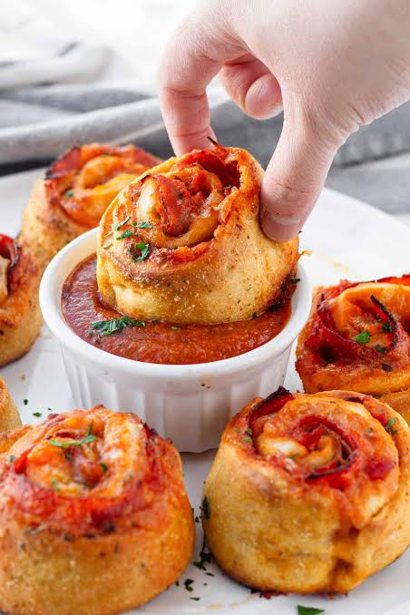

Home
Cheesy Pepperoni Pizza Rolls

This pizza roll recipe is the perfect snack for gameday or family trivia night.
Ingredients
- 1 (13.8 ounce) package Pillsbury® classic pizza crust1 (13.8 ounce) package Pillsbury® classic pizza crust
- 1 cup marinara sauce, divided
- 1/2 cup shredded mozzarella cheese
- 1/2 cup freshly grated Parmesan cheese
- 1/2 cup thinly sliced pepperoni, cut in halves
- 1/2 teaspoon Italian seasoning
- 1/2 teaspoon garlic powder
- 2 tablespoons minced onion (Optional)
- 1/2 teaspoon red pepper flakes (Optional)
Steps
- Place pizza dough on a lightly floured work surface, and press into a rectangle. Spread a thin layer of marinara sauce on the dough to within 1/2 inch of the crust edges (you will not need all of the sauce), and top with mozzarella and Parmesan cheeses.
- Evenly distribute pepperoni and onion over the cheeses, and sprinkle with Italian seasoning, garlic powder, and red pepper flakes.
- Tightly roll up the dough to form a log, pinching the seam together to seal. Transfer dough to the refrigerator for 10 minutes to make slicing easier.
- Preheat the oven to 425 degrees F (220 degrees C). Line a baking sheet with parchment paper.Preheat the oven to 425 degrees F (220 degrees C). Line a baking sheet with parchment paper.
- Using a serrated knife, slice the log into 12 individual rolls and set onto the prepared baking sheet.
- Bake in the preheated oven until pizza rolls are golden brown in color and the cheese has melted, 10 to 12 minutes.
- Serve pizza rolls with the remaining warmed marinara as a dipping sauce.